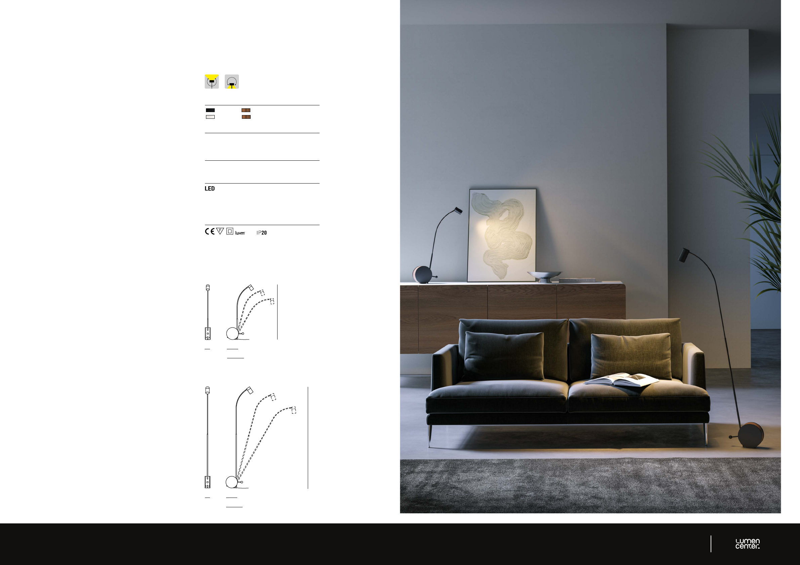

48
CHIOCCIOLA READING / TABLE
Design Ahlux
_
A completamento della collezione, Chiocciola Reading e
Table sono stati concepiti per spazi dedicati alla lettura, al
lavoro e alla concentrazione.
Gli spot LED sono orientabili in verticale grazie a uno
snodo integrato. I LED di nuova generazione “blue hazard
free” con CRI >97 e driver “flicker free” la rendono una
lampada ad alto comfort visivo.
Il corpo principale è disponibile in Nero o Bianco FT.
Base circolare in nero o bianco e legno di noce Canaletto.
_
Completing the collection, Chiocciola Reading and Table
have been designed for spaces dedicated to reading,
work and concentration.
The LED spot can be adjusted vertically thanks to an
integrated joint. New generation “blue hazard free” LED
with CRI >97 and driver “flicker free” makes it a lamp and
a high visual comfort.
Main structure available in black or white FT finishes.
Circular base in black or white finishes and Canaletto
walnut.
_
Pour compléter la collection, Chiocciola lecture et à poser
ont été conçues pour des espaces dédiés à la lecture, au
travail et à la concentration.
Les spots LED sont orientables verticalement grâce à une
articulation intégrée. Les LED nouvelle génération “blue
hazard free” avec CRI >97 et driver “flicker free” en font
une lampe à haut confort visuel.
Le corps principal est disponible en noir ou blanc FT.
Base circulaire en noir ou blanc et bois de noyer
Canaletto.
_
Um das Angebot an mobilen Geräten zu vervollständigen,
wurden Chiocciola Reading und Table für Lese-, Arbeits-
und Konzentrationsbereiche konzipiert. Die LED-Spots
kann dank eines integrierten Gelenks vertikal verstellt
werden. Die neue Generation „blue hazard free“ LEDs
mit CRI >97 und „driver flicker free“ machen sie zu einer
Leuchte mit hohem Sehkomfort. Die Hauptstruktur ist
mit schwarzen oder weißen Verzierungen verfügbar.
Kreisförmiger Grund aus weiß oder schwarz und
Canaletto-Nussbaum.
CHIOCCIOLA TABLE
CHIOCCIOLA READING
Unit: cm
8 ø 17,5
ø 17,5
25
25
max
150
max
80
8
FINISHES
103 FT Black + LN Walnut
105 FT White + LN Walnut
ELECTRONIC DRIVER
CHIOCCIOLA READING Foot dimmer included
CHIOCCIOLA TABLE Push dimmer included
CABLE
Black or Transparent
LIGHT SOURCE
220/240V
CHIOCCIOLA READING 15W 1400lm BEAM ANGLE: 50°
CHIOCCIOLA TABLE 11W 1000lm BEAM ANGLE: 56°
2700K CRI>97
CERTIFICATION
RoHS
D’SOL PTE LTD
Email
sales66@d-soldeco.com
Call WhatsApp Product
Brand
6384 6616 / 8787 6616
Head Office
61 Ubi Rd 1 #01-06 Oxley Bizhub Singapore 408727
Branch Office
65 Ubi Rd 1 #01-63 Oxley Bizhub Singapore 408729